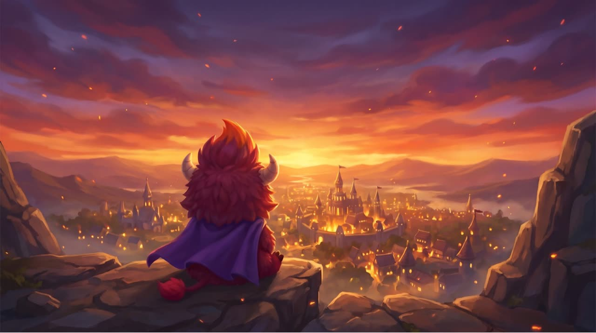
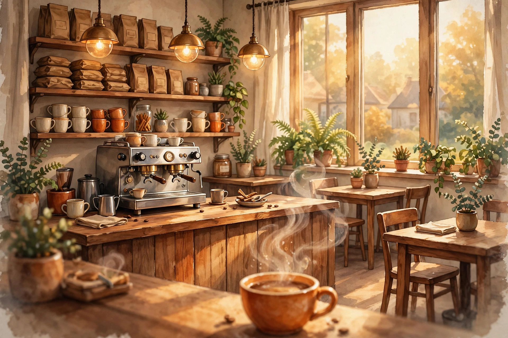

Eric Gimarse
AI animator & designer in SoCal — building app & game UI in public.
Google Flow • Higgsfield • ElevenLabs

Portfolio Piece #1 — Flair Poof
An animated game title screen for an original character: a tiny red poof monster with big flair, overlooking the kingdom he is about to save. Character design, turnaround sheet, scene and looping animation created with AI tools, then built into an interactive page.

Portfolio Piece #2 — Poof
An animated app home screen for a cozy daily-quest companion app. Poof lives in a cave in the hills, too shy to visit the town below — the tiny quests you finish together grow the living flame on his head. Animated header, working quest cards, progress ring, streak flame, and tabs, presented in a phone mockup.

Portfolio Piece #3 — Fire Muffin Catch
A playable mini-game moment: fire muffins are raining over the hills and Poof has to catch them. A complete little game loop built with HTML, CSS and JavaScript — movement, catching, misses, hearts, a win state, a lose state, and a difficulty ramp.

Portfolio Piece #4 — Ember Roast Coffee Co.
A landing page for a fictional neighborhood coffee shop in Riverside — the kind of site a real local business hires a freelancer to build. Hero with a live open/closed badge based on the shop's hours, a tabbed menu, the shop's story, customer reviews, hours and directions, tap-to-call throughout, and a sticky call/directions bar on mobile.